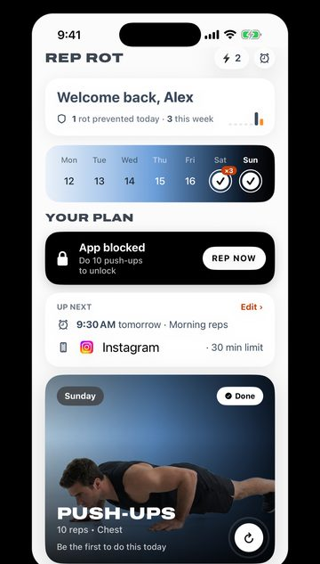

Willpower Isn't the Problem. Your Feed Is Built for This.
Why you can't stop scrolling even when you want to, and why the answer isn't more discipline: it's changing what happens when the urge hits.

TL;DR
- You're not weak. Feeds are designed with no stopping point and get better at holding your attention over time.
- Willpower plans make you win a decision every time. Rules decided in advance mean fewer decisions.
- Use limits plus friction: allowances, a night schedule, a locked passcode, apps off the Home Screen.
- Give the urge an outlet. A short, physical one is best.
- Make extra scrolling cost one set of exercise. You'll often decide you didn't want it.
A Reel has been going around with a few hundred thousand likes. A webcam, a window, no music, no jump cuts. Just this:
"Your willpower pales in comparison to an entire infrastructure … that had been studying you ever since you went online. It knows exactly which buttons to push."
That's from a Reel by Mark Flores (@e.markflores), worth the two minutes, and the point is right. The comments are full of people agreeing, from inside the app, at midnight, mid-scroll. Which proves it better than any argument could.
So let's take the idea seriously. If willpower loses, what wins?
Why you can't stop scrolling
When you put the phone down after an hour and feel gross about it, the usual story is "I have no self-control." That story is wrong, and believing it makes things worse.
Look at what you're up against. A feed is designed so that there's never a natural place to stop. Aza Raskin, the designer credited with inventing infinite scroll in 2006, has publicly expressed regret over how it's been used. In a 2018 BBC Panorama interview, Raskin described the effect of these design patterns as being like "behavioural cocaine" sprinkled over an interface.
Add an algorithm that learns which posts keep you watching, and you get a product that gets better at holding your attention every time you use it. You get tired at night. It doesn't.
That's not a fair fight, and it was never supposed to be.
"Just use it less" is a plan to lose every night
Willpower-based plans all have the same shape: when the urge comes, I'll resist it. That means you have to win a decision every time, often dozens of times a day, usually when you're bored, stressed or exhausted, which is exactly when decisions are hardest.
People who seem to "have discipline" mostly don't win more of those fights. They have fewer of them. The phone charges in another room. The app isn't on the Home Screen. Their evenings have something else in them.
That's the shift: stop trying to be stronger than the feed, and start changing the moment before the feed.
What actually works: rules, friction and a replacement
The Reel ends on a hopeful note: "Yet, it doesn't mean nothing can be done." Mark's answer is "extraordinary measures," including apps that limit phone use by blocking certain apps. Then the kicker: "So now excuse me, as I only have 5 more minutes before this blocker blocks my Instagram app."
That's the right instinct. But a limit on its own is half a solution. Here's the full version.
1. Decide once, not every time
Make the decision in advance, while you're calm, and let the phone enforce it. A daily allowance on your two worst apps, a schedule that turns them off at night, and a locked Screen Time passcode so 11 p.m. you can't renegotiate with 9 a.m. you. We walk through the exact iOS settings in How to Stop Doomscrolling on iPhone.
2. Put a speed bump in front of the habit
Most scrolling starts before you've decided to scroll. Your thumb opens the app the way your hand finds a light switch. Small friction breaks that: the app in a folder on the last page, feed notifications off, grayscale at night. A few seconds is enough time for "wait, do I want this?" to show up.
3. Give the urge somewhere to go
This is the part people skip, and it's why "detoxes" don't last. Blocking the feed doesn't delete the urge. You're bored, restless or avoiding something, and that feeling needs an outlet. If nothing is planned, it finds the next app.
The best outlet is physical and tiny: ten squats, ten push-ups, a 20-second plank. It changes your state fast, it can't turn into a two-hour hole, and you finish feeling a little better instead of a little worse.
Make the feed cost something
Here's a way to combine all three. Pick a price for scrolling past your limit, and make it something good for you: one set of exercise to unlock the app.
It sounds like a gimmick until you try it. Three things happen:
- The autopilot breaks. You can't do ten squats on autopilot. By the time you're done, you've actually decided whether you want to keep scrolling.
- Half the time, you don't go back. The urge was never really for the feed. It was for a break, and you just took one.
- The other half, you still won. You did a set you wouldn't have done. Spread a few of those across a day and it adds up to real training, which we cover in Exercise Snacks: Why One-Minute Workouts Count.

You're not fighting the infrastructure anymore. You're charging it rent.
What not to do
- Don't shame yourself. Feeling bad after scrolling is one of the main reasons people scroll more. The phone is the easiest place to hide from a bad feeling.
- Don't go to zero. Work, school, friends and banking all run through your phone. A plan that needs you to quit everything won't survive a Tuesday.
- Don't rely on a streak. You'll break it. Decide now that a broken day means "adjust the setup", not "start over Monday."
Where Rep Rot fits
We built Rep Rot around that last idea. You set limits on the apps you lose time to. When you hit one, the app locks until you do a set: squats, push-ups, sit-ups, pull-ups or a plank, counted by your iPhone's camera on the phone itself. Nothing is recorded or uploaded, and Rep Rot can't see which apps you use.
It won't out-engineer a billion-dollar feed. It doesn't have to. It just has to put ten squats between you and the next hour, and let you decide.
Sources: Mark Flores, @e.markflores Reel; BBC Panorama coverage via BGR, "Insiders say they designed social media to be 'behavioral cocaine'" (2018); Masters of Scale, "He invented infinite scroll and says he regrets it"; Apple, Set Screen Time Schedules and Time Allowances on iPhone.